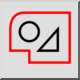

Vybrat obrys
Panel nástrojů / Ikona:


Nabídka: Výběr > Vybrat obrys
Zkratka: T, C
Příkazy: selectcontour | tc
Jedná se o automatický překlad.
Panel nástrojů / Ikona:


Vybere nebo zruší výběr prvků, které jsou navzájem spojeny a tvoří obrys (uzavřený nebo otevřený).
Místo použití tohoto nástroje můžete jednoduše dvakrát kliknout na prvek a vybrat jej i všechny spojené prvky.